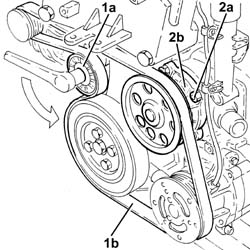
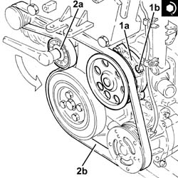

1088C20 water pump - r + r with engine removed
- Path
- Procedures > 10 ENGINE UNIT > 1088 ENGINE COOLING > 1088C water pump and thermostat > 1088C20 water pump - r + r with engine removed
- Kind
- repair procedure (removal / refitting; the operation number is the code)
- Applies to
- engines: 1.3 JTD 16v; all production periods
- Interactive page
- https://sloeber94.github.io/elrnDB-fPnd/en/#/2753390
Applies to: engines: 1.3 JTD 16v; all production periods
 Removing
Removing
 Refitting
Refitting1. Use a spanner on the moving tensioner (1a) and remove the engine components single drive belt (1b).
2. Undo the nuts (2a) and remove the water pump (2b) complete with gasket.

Applies to: engines: 1.3 JTD 16v; all production periods
Refitting
Removing1. Place the water pump (1a), complete with gasket, back in its housing and secure it tightening the bolts (1b) to the recommended torque.
 | Fastening | Component | Ø | Value (daNm) |
|---|---|---|---|---|
1b | Nut | COOLANT PUMP | M6 | (Upper engine crankcase side) 0.8 ÷ 1.0 |
2. Use a spanner on the moving tensioner (2a) and fit the single drive belt (2b).
